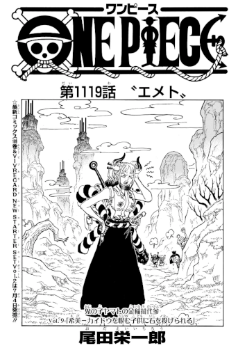

A Peregrinação de Yamato, A Cria do Demônio - Representante Suplente da Colheita do Ouro, Vol. 9: "Kibi: recebendo pedradas de crianças que odeiam o Kaidou".
Confira o novo capítulo de número 1119 do mangá de One Piece.
Confira os capítulos anteriores.